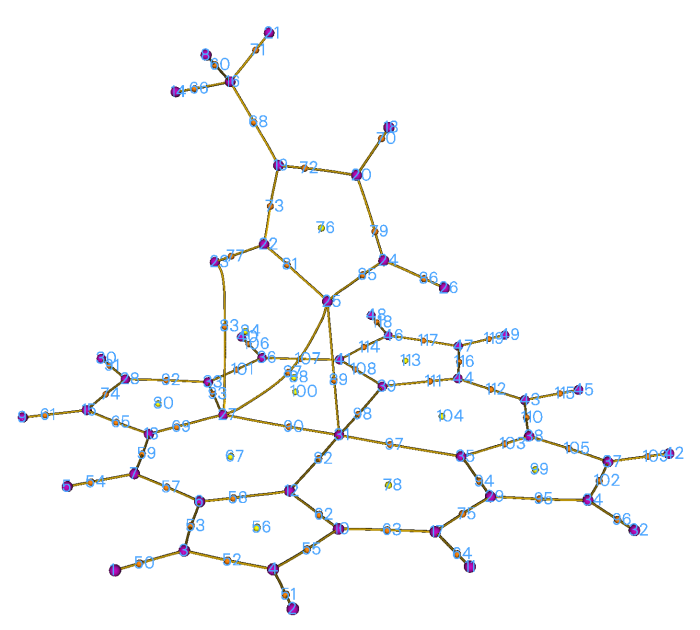
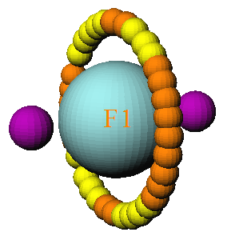
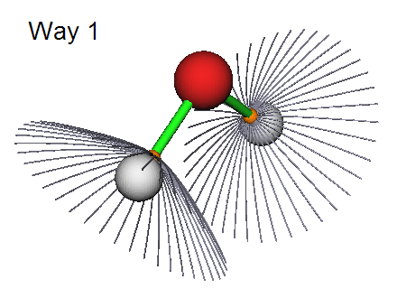
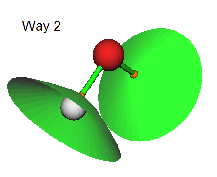

3.14 拓扑分析(topology analysis) (2)
3.14.1 理论(Theory)
Multiwfn的拓扑分析模块相当灵活、强大且通用，只要函数的变化是光滑的、因而其梯度是连续的，它就可应用于Multiwfn支持的任何实空间函数(real space function)。所有常被研究的函数，如电子密度(electron density)、其拉普拉斯(Laplacian)、轨道波函数(orbital wavefunction)、自旋密度(spin density)、ELF、LOL、ESP……都可由该功能分析。待研究的默认实空间函数是电子密度，它可通过选项-11改变。注意，一旦选择了选项-11，所有先前的拓扑分析结果将被清除。
由Bader提出的拓扑分析技术首先用于“分子中的原子(atoms in molecules)”(AIM)理论中的电子密度分析，该理论也被称为“分子中的原子的量子理论(the quantum theory of atoms in molecules)”(QTAIM)，该技术也已被推广到其它实空间函数，e.g. Silvi和Savin给出了小分子ELF的首个拓扑分析研究，见Nature，371，683 (1994)。在拓扑分析语言中，函数值的梯度范为零的点(无穷远处除外)被称为临界点(critical points, CPs)，CPs可根据实空间函数Hessian矩阵(Hessian matrix)为负的本征值(eigenvalues)的数目分为四类。
(3,-3)：函数Hessian矩阵的三个本征值均为负，即局域极大值(local maximum)。对于电子密度分析和重原子，(3,-3)的位置与核位置几乎相同，因此(3,-3)也被称为核临界点(nuclear critical point, NCP)。一般地，(3,-3)的数目等于原子数，仅在罕见情况下前者可多于(e.g. Li₂)或少于(e.g. KrH⁺)后者。
(3,-1)：函数Hessian矩阵的两个本征值为负，即二阶鞍点(second-order saddle point)。对于电子密度分析，(3,-1)一般出现在有吸引作用的原子对之间，因此常被称为键临界点(bond critical point, BCP)。BCP处实空间函数的值具有重要意义，例如对于类似的键，BCP处$\rho$的值和$\nabla^2\rho$的符号分别与键强度(bonding strength)和键类型(bonding type)密切相关(The Quantum Theory of Atoms in Molecules-From Solid State to DNA and Drug Design，p11)；我已证明BCP处的$\rho$可被可靠地用于预测氢键结合能(hydrogen bond binding energies)(J. Comput. Chem，40，2868 (2019))；BCP处的局域信息熵(local information entropy)是芳香性(aromaticity)的良好指标(Phys. Chem. Chem. Phys.，12，4742 (2020))。
(3,+1)：函数Hessian矩阵仅有一个本征值为负，即一阶鞍点(first-order saddle point)(如势能面(potential energy surface)中的过渡态(transition state))。对于电子密度分析，(3,+1)一般出现在环体系(ring system)中心并表现空间位阻效应(steric effect)，因此(3,+1)常被称为环临界点(ring critical point, RCP)。
(3,+3)：函数Hessian矩阵没有本征值为负，即局域极小值(local minimum)。对于电子密度分析，(3,+3)一般出现在笼体系(cage system)中心(e.g. 棱锥形P₄分子)，因此常被称为笼临界点(cage critical point, CCP)。
CPs的位置默认通过Newton法(Newton method)搜索。若选择一个起始点，则Newton迭代将收敛到离它最近的CP。通过指定合适的猜测位置并从其中每一个出发执行Newton迭代，最终可找到所有CPs。一旦CPs搜索完成，可根据Poincaré-Hopf关系(Poincaré-Hopf relationship)验证是否可能已找到所有CPs，该关系表述为
连接键临界点(BCP)和相连的两个密度局域极大值的最大梯度路径(maximal gradient path)被称为“键径(bond path)”，它揭示了各类成键的原子间相互作用路径。键径的集合被称为分子图(molecular graph)，它提供了分子结构的明确定义。键径可以是直线或曲线，显然对于后一种情况，键径的长度长于键临界点与相连的两个(3,-3)临界点之间距离之和。
让我们看一个例子。在下图所示的配合物中，咪唑平面垂直于镁卟啉平面，咪唑中的氮与镁配位。品红色、橙色和黄色小球分别对应于(3,-3)、(3,-1)和(3,+1)临界点，棕色线表示键径。

其它实空间函数的拓扑路径(topology path)在Multiwfn中也能生成，它们对于阐明临界点之间的内在关系非常有帮助。
关于简并临界点(degenerate CP)
简并临界点在一般体系中的出现非常罕见，因此我在本节最后提及它。所谓简并临界点是指具有一个或两个零Hessian矩阵(Hessian matrix)本征值(eigenvalue)的临界点。这些临界点非常不稳定，分子几何的轻微扰动就可使其分裂为其它类型的临界点。然而，简并临界点通常出现在轴对称体系中。例如，在基态氟原子中，一个$p$轨道单占据而另两个双占据，对LOL的拓扑分析给出下图：

两个(3,-3)对应于单占据$p$轨道的两个瓣，而源于另两个$p$轨道的电子局域极大值由一圈临界点表示。表面上，圆圈上的临界点为(3,-1)或(3,+1)型，但实际上它们是同一类型的简并临界点，其中一个本征值为零。仅由于本征值数值收敛的原因，它们在Multiwfn中形式上被记录为不同的临界点类型。
3.14.2 搜索临界点(Search critical points)
搜索模式(Searching modes)
在Multiwfn中，提供了几种模式来指定用于搜索临界点的起始点：
(1) 从给定起始点搜索临界点(Search CPs from given starting points)：如果你已知道临界点的大致位置，或能合理猜测临界点可能出现的位置，那么该模式非常适合你，迭代将从所提供的坐标开始。在该模式下，你可直接输入一个起始点的坐标，或输入两个原子序号，则它们的中点将被作为起始点。你还可提供一个.pdb或.pqr文件，其中原子坐标将依次被视为起始点。此外，还可提供一个包含所有起始点的.txt文件，格式应如下所示，每行对应一个起始点以Bohr为单位的X、Y、Z坐标，格式自由
1.2 3.10 -0.4 0.477 5.2 5.92 -3.26 3.3 0.5 ...(2) 从核位置(nuclear position)搜索临界点(CP)：该模式依次使用所有核位置作为起始点(starting point)，该模式非常适合搜索$\rho$ 的所有(3,-3)，以及ELF/LOL和$\rho$ 的拉普拉斯(Laplacian)在原子最内层区域的那些(3,-3)临界点。对于电子密度(electron density)分析，如果使用该模式后你定位到$n$ 个临界点，而你的体系中原子数多于$n$，这通常意味着在搜索过程中遗漏了一些(3,-3)临界点。
(3) 从原子对中点(midpoint of atomic pair)搜索临界点：该模式依次使用所有原子对的中点作为起始点。该模式非常适合搜索$\rho$ 的所有(3,-1)临界点。
(4) 从三个原子的三角形中心(triangle center)搜索临界点：与模式3类似，但使用你的体系中三个原子的所有组合的三角形中心。适合搜索所有(3,+1)。
(5) 从四个原子的锥体中心(pyramid center)搜索临界点：与模式3类似，但使用你的体系中四个原子的所有组合的锥体中心。对于电子密度分析，如果你已尝试模式2和模式3但仍无法找到某些(3,+3)，该模式值得尝试。由于将考虑更多组合，该模式比模式3更耗时。
注意，对于周期性体系(periodic case)，模式3同时循环实际原子(real atom)和镜像原子(image atom)，而模式4和模式5仅循环实际原子。
(6) 从球(sphere)内一批点搜索临界点：你需要首先设置球心(sphere center)、半径(radius)和点数(number of points)，然后选择选项0，指定数量（但不是你设置的精确数量）的点将随机分布在球内作为搜索的起始点。球心可以通过选项2~6以非常灵活的方式定义。如果你选择选项-1，则搜索开始，每个原子中心(atom center)将依次被作为球心，假设有$n$ 个原子且你设置的球内点数为$m$，则约$n$ * $m$ 个点将用作初始猜测(initial guess)。如果你选择选项-2，则将提示你输入原子的序号，这些原子的原子核(nucleus)将依次用作球心。
该模式非常适合搜索难以用其他模式定位的临界点。**对于ELF、LOL和拉普拉斯，强烈建议在该模式下使用选项-1以尝试定位所有可能的临界点。**注意，每次执行搜索时起始点的位置都不同，如果在之前的搜索中未找到某些感兴趣的临界点，尝试一次又一次地启动搜索以定位缺失的临界点。
注意，每次执行时通过搜索模式6定位到的临界点的序号可能不同！
临界点搜索参数
默认搜索参数适合大多数体系，然而在某些情况下你必须手动调整参数以确保能够找到预期的临界点。这些参数可以在选项“-1 设置临界点搜索参数”中设置。
(1) 设置最大迭代次数(maximal iteration)：如果在收敛到临界点之前或在Hessian矩阵(Hessian matrix)变为奇异（即迭代无法继续）之前迭代次数超过该值，则迭代将被终止。
(2) 设置步长缩放因子(scale factor of stepsize)：默认值为1.0，这意味着由标准算法(standard algorithm)确定的步长保持不变。有时减小步长有利于定位临界点。例如，在examples\uracil.wfn的拓扑分析(topology analysis)中，使用模式2以默认参数无法找到连接N6和H12的键临界点(Bond Critical Point, BCP)。如果你将步长减小到0.5，则该问题将得到解决。
(3)/(4) 设置梯度范数(gradient norm)/位移(displacement)收敛标准(convergence criterion)：如果当前位置的梯度范数和上一步的位移都小于这两个值，则迭代将停止，当前位置将被视为临界点。
注意
注意，对于通常用于定位核临界点(NCPs)的搜索模式(searching mode) 2，梯度模(gradient norm)的收敛判据(convergence criterion)被暂时移除，因为对于很重的原子，在原子核位置处电子密度(electron density)峰非常尖锐，如果考虑梯度模判据，迭代(iteration)很难收敛。
(5) 临界点(CPs)之间的最小距离：如果一次迭代收敛到了一个临界点，但该临界点与任何已找到的临界点之间的距离小于此值，则刚找到的临界点将不被视为新的临界点，因此被丢弃。
(6) 如果原子间距离长于其范德华半径(vdW radius)之和乘以该值则跳过搜索：在临界点搜索模式3、4和5中，如果组合中涉及的任意两个原子的距离长于其范德华半径之和乘以该值，则将跳过当前搜索。此选项的目的是减少搜索次数，从而降低大体系的计算成本。例如，前文提到的咪唑-镁卟啉配合物，有49*48/2=1176个原子对，因此当你选择搜索模式2时如果不采用此截断策略，Multiwfn将尝试多达1176次搜索。而如果使用此策略，由于只考虑密切相关的原子对，只需进行274次搜索，可以发现它们的结果是相同的。
(7) 是否打印临界点搜索过程的细节：此选项仅存在于串行模式(serial mode)中。用户可以选择临界点搜索过程细节的输出级别。此选项主要用于调试(debugging)。
(8) 设置判断Hessian矩阵(Hessian matrix)是否奇异(singular)的判据：如果Hessian矩阵行列式(determinant)的绝对值低于此值，则Hessian矩阵将被视为奇异并终止搜索。过大的值可能导致某些临界点被遗漏，而过小的值可能导致数值不稳定以及在远离体系的区域出现临界点。默认值适用于大多数情况。
(9) 设置保留临界点的数值范围：利用此选项，在临界点搜索过程中，只有数值在用户定义范围内的临界点会被保留，因此可以忽略不必要的临界点。默认情况下，保留所有临界点。通过此选项你可以例如只搜索弱相互作用区域中的临界点(对应于低电子密度区域)。
(10) 设置在搜索模式2、3、4、5中要考虑的原子：此选项用于设置搜索模式2、3、4、5的原子范围。默认情况下，搜索中将考虑所有原子。然而，在此选项中可以选择两种特殊方式：
方式1(Way 1)：仅在局域区域内搜索临界点。系统将要求你定义一个片段(fragment)，然后在搜索过程中只考虑该片段中的原子。如果你只对局域区域内的临界点感兴趣，此方式很有用。
方式2(Way 2)：在两个区域之间搜索临界点。系统将要求你定义两个片段(不应有重叠)，然后在临界点搜索过程中，组合中涉及的所有原子不会同时出现在同一个片段中；换句话说，至少有一个原子必须出现在另一个片段中。此方式对于搜索两个分子之间的临界点特别有用(其成本可能显著低于搜索整个配合物的临界点)
对于搜索模式2，两种方式之间没有区别，其中每次搜索只涉及一个原子。
(11) 设置搜索的信赖半径(trust radius)：如果位移(displacement)的模(norm)大于此值，位移矢量(displacement vector)将被缩放，使其模与该半径相同。将信赖半径设置为比默认值更小的值(例如 0.1 Bohr)可以提高收敛的稳定性。
(12) 选择搜索算法(searching algorithm)：该选项很少使用，因为默认牛顿法(Newton method)在大多数情况下都能合理地工作。然而，Multiwfn提供了可能在特殊情况下有用的替代方法：
Barzilai-Borwein (BB)方法是最速下降算法(steepest descent algorithm)的一种特殊形式，在每一步中，沿梯度向量(gradient vector)的位移方向和距离通过特定方式确定，以模拟牛顿法的收敛行为。BB能够定位任何种类的临界点(CPs)，并且像牛顿法一样趋向于收敛到距起始点(starting point)最近的临界点，而它不依赖于Hessian矩阵(Hessian matrix)。尽管在大多数情况下牛顿法更稳健且收敛更快，但当你发现它未能成功定位到预期的临界点时，你可以改用BB。
Multiwfn也支持最速上升法(steepest ascent, SA)和最速下降法(steepest descent, SD)，它们分别仅用于定位(3,-3)和(3,+3)临界点。换句话说，如果你选择这些方法，其他种类的临界点将永远不会被定位到。因此，如果你只关注定位极大值(maxima)(e.g. ELF和LOL的极大值)或极小值(minima)(e.g. 静电势(electrostatic potential)的极小值)，它们是有用的。此外，对于行为不佳的函数，即其在极小值和极大值周围的局域特征远离二次函数(quadratic function)，牛顿法和BB方法完全不收敛，SA和SD是仅有的选择。此外，一些函数具有非常拥挤的临界点或在非常狭窄的二次区域内的极小值/极大值，我经常发现牛顿法和BB很难收敛到极小值/极大值，在这种情况下，如果极小值/极大值是你真正感兴趣的，也应使用SA/SD。Multiwfn中的SA (SD)利用微迭代(microiteration)来确定沿梯度向量正(负)方向的合适位移幅度；在每次微迭代中，如果位移不能导致函数值增加(减少)，位移幅度将减小到40%并重试，直到函数值确实增加(减少)。
3.14.3 生成拓扑路径(topology paths)
路径生成方法(path generating methods)
一旦找到临界点，你可以选择生成拓扑路径，它连接各个临界点。在Multiwfn中，路径本质上表示为均匀分布在一条曲线上的一组点。使用选项8和9，可以生成两种路径：
(1) 生成连接(3,-3)和(3,-1)临界点的路径：从算术上讲，首先将每个(3,-1)的坐标分别沿对应于Hessian正本征值(eigenvalue)的本征向量(eigenvector)向前和向后位移，然后沿梯度向量上坡行进，直到遇到一个(3,-3)，所得轨迹构成键径(bond paths)。
(2) 生成连接(3,+1)和(3,+3)临界点的路径：与上述类似，区别在于起始点是(3,+1)，并且它们的坐标首先沿对应于Hessian负本征值的本征向量向前和向后移动，然后沿梯度向量下坡行进。
路径生成参数
在选项“-2 设置路径生成参数(Set path generating parameters)”中，有一些子选项用于调整生成路径的参数：
(1) 路径的最大点数(maximum number of points of a path)：在每条路径的生成过程中，如果在遇到临界点之前步数达到了该值，则该轨迹将被丢弃。对于生成非常长的路径，可能需要增大默认值。
(2) 步长(stepsize)：构成路径的相邻点之间的间隔。对于具有大曲率(curvature)的路径，有时在默认步长下无法生成，你需要适当减小步长并尝试重新生成路径。如果你将路径的最大点数和步长分别设为$m$和$n$，则路径的最大长度将不超过$m\times n$。
(3) 若与任意临界点(CP)的距离小于则停止生成：在路径(path)的生成过程中，若发现当前点与一个已定位临界点之间的距离小于该值，则该路径将被视为与该临界点相连。
3.14.4 生成盆间表面(interbasin surfaces)
由Multiwfn生成的盆间表面(interbasin surfaces, IBS)实际上由一束源自(3,-1)临界点的路径组成，这些表面将整个空间划分为每个(3,-3)临界点各自的区域。通过选项"10 添加或删除盆间表面"，您可以生成、删除和查看盆间表面。注意，在生成盆间表面之前，应首先完成临界点的生成，且必须至少找到一个(3,-1)临界点。
如果您想从索引为15的(3,-1)临界点生成盆间表面，只需输入15(您会发现首先通过功能0可视化临界点以获取临界点索引很有用)。要删除该表面，输入*-15*(负号表示"删除")。如果没有显示盆间表面而您希望生成所有盆间表面，输入0。要删除所有已生成的盆间表面，同样输入0。通过输入字母l可打印已生成盆间表面的列表。如果您需要将特定盆间表面(e.g.对应于索引为4的(3,-1)临界点)的路径导出到外部文件，输入o 4，则源自临界点4的所有路径的坐标将被保存到当前文件夹中的surpath.txt。输入字母q可返回上一级菜单。
用于生成盆间表面的参数可通过选项"-3 设置盆间表面生成参数"调整。增大每个盆间表面中的路径数量或减小步长(stepsize)将使盆间表面看起来更平滑。盆间表面中路径的长度，或者说盆间表面的面积，与步长和每个盆间表面路径中点数的乘积成正比。注意，一旦更改参数，所有已生成的盆间表面都将丢失。
在Multiwfn中有三种描绘盆间表面的方式，可通过settings.ini中的"isurfstyle"控制。方式1通过源自相应(3,-1)临界点的路径直接表示盆间表面；方式2通过实心表面显示盆间表面，这是默认样式；方式3不常用，您可以自行尝试。


3.14.5 可视化、分析、修改和导出结果
可视化结果(选项0)
如果您选择选项"0 打印并可视化所有已生成的临界点、路径和盆间表面"，将弹出一个图形用户界面(GUI)，您可以直观检查临界点、拓扑路径(topology paths)和盆间表面，您可以控制是否显示每种类型的临界点、路径、盆间表面、分子结构(molecular structure)、标签(labels)等。同时，在命令行窗口(command-line window)中打印已找到临界点和路径的摘要。还将检查庞加莱-霍普夫关系(Poincaré-Hopf relationship)的满足情况。
如果要分析的实空间函数(real space function)是电子密度(electron density)，核临界点与原子之间的对应关系将显示在命令行窗口中。如果已生成键路径(bond paths)，则通过键路径与每个键临界点(BCP)相连的两个原子也将在命令行窗口中给出。
评估临界点性质(选项7)
您可以通过功能"7 显示特定临界点或所有临界点处的实空间函数值"获得Multiwfn支持的所有实空间函数的值(以及所选实空间函数的梯度(gradient)和Hessian矩阵(Hessian matrix))在给定临界点或所有临界点处的值。注意，静电势(electrostatic potential)是所有实空间函数中计算开销最大的，如果您对其不感兴趣，可以将settings.ini中的"ishowptESP"参数设为0以跳过静电势的计算。
在此功能中，你还可以将给定临界点(CP)处选定的实空间函数(real space function)分解为一系列轨道(orbital)的贡献。参见4.2.4节中的相应例子。
测量几何(选项 -9)
通过使用选项"-9 Measure distances, angles and dihedral angles between CPs or atoms"，可以方便地测量原子与临界点之间的距离、角度和二面角。
操作临界点(选项 -4)
在选项"-4 Modify or export CPs"中，你可以打印、添加、删除和导出临界点。在子选项2中，可以根据多种条件删除临界点，包括：(1)临界点类型 (2)临界点序号范围 (3)到特定分子片段(molecular fragment)的距离(因此你可以删除不相关区域中的临界点) (4)电子密度(electron density)范围(利用此功能，你可以仅删除具有低密度的临界点，从而删除弱相互作用区域中的临界点，或删除具有高密度的临界点，从而删除化学键区域中的临界点)。
通过子选项4，可将所有找到的临界点的位置和类型保存到当前文件夹中的格式化文本文件CPs.txt。通过子选项5，还可以从外部格式化文本文件加载临界点信息(当前任务中已找到的临界点将被清除)，注意文件格式必须与子选项4输出的文件格式完全相同。
通过子选项6，可将所有临界点导出为.pdb文件，以便用外部可视化软件(如VMD)方便地可视化临界点。在此文件中，元素C/N/O/F分别对应于(3,-3)/(3,-1)/(3,+1)/(3,+3)。
操作拓扑路径(topology paths)(选项 -5)
在选项"-5 Modify or print detail or export paths, or plot property along a path"中，你可以通过子选项1和2分别打印已生成路径的摘要和打印特定路径中所有点的坐标。
通过子选项4，你可以将所有路径的详细信息导出到当前文件夹中的paths.txt。通过子选项5，可以从外部文件导入路径，文件格式必须与子选项4输出的文件格式完全相同。
通过子选项6，可以将所有路径中的所有点导出到当前文件夹中的pdb文件，以便用外部可视化软件方便地可视化路径。
通过子选项7，可以将沿选定拓扑路径的实空间函数值绘制为曲线图或导出为纯文本文件。你还可以分别以"Dist."和"Value"列对应的数据作为X和Y轴，用第三方绘图软件绘制曲线图。
可以通过子选项3直接输入路径序号手动删除路径。子选项8也用于删除路径，它旨在仅保留连接两个片段的键路径(bond path)(及相应的键临界点(BCP))而删除所有其它键路径，以便能更容易地通过AIM方法研究片段间相互作用。此选项的用处将在4.2.6节的例子中说明。
3.14.6 基于电子密度拓扑性质计算芳香性指数(aromaticity indices)
如果你选择的实空间函数是电子密度，选项20和21将可见，它们是用于分析芳香性的工具。
Shannon芳香性指数(Shannon aromaticity index)
选项20用于计算Shannon芳香性(SA)指数，详情见Phys. Chem. Chem. Phys., 12, 4742 (2010)。公式可简写为
环临界点(RCP)处垂直于环平面(ring plane)的电子密度(electron density)曲率(curvature)
在Can. J. Chem.，75，1174 (1997)中，作者表明环临界点处的电子密度与相应环的芳香性密切相关。密度越大，芳香性越强。他们还指出，环临界点处垂直于环平面的电子密度曲率与环芳香性具有更显著的相关性。曲率越负，芳香性越强。假设环严格垂直于某个笛卡尔轴(Cartesian axis)，例如，垂直于Z轴的环(*viz.*环位于XY平面内)，则该曲率就是环临界点处电子密度的Hessian矩阵(Hessian matrix)的ZZ分量，该分量可通过使用选项7直接打印给定环临界点的性质来获得。然而，如果环并不严格垂直于任何笛卡尔平面(Cartesian plane)，你应使用选项21计算该曲率。在选项21中，你应输入环临界点的序号(或直接输入一个点的坐标)，然后选择2，再输入构成该平面的三个原子的序号(它们用于拟合环平面)。
各种拓扑分析(topology analysis)的例子可在第4.2节中找到。
所需信息
GTFs、原子坐标(atom coordinates)